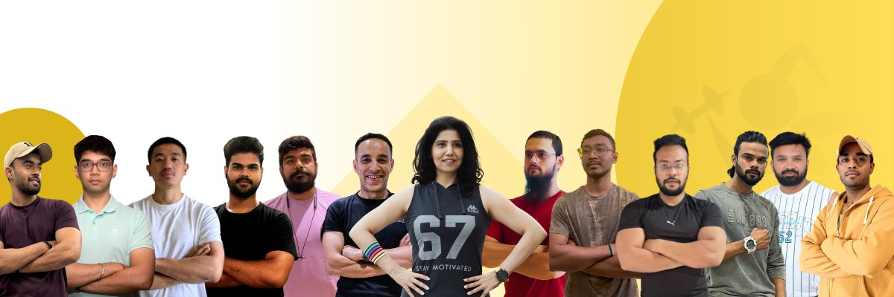
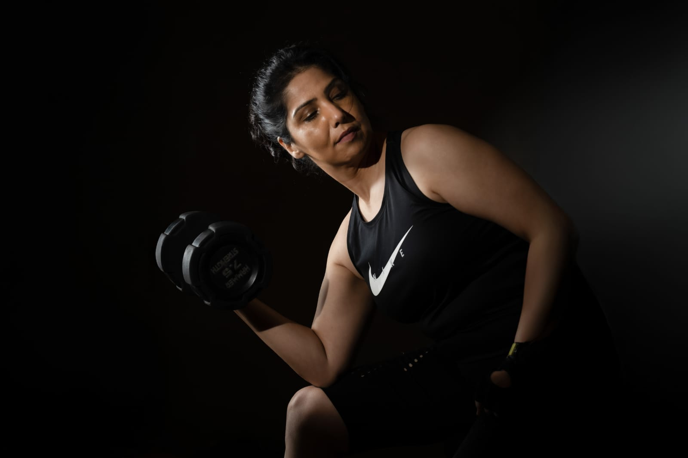
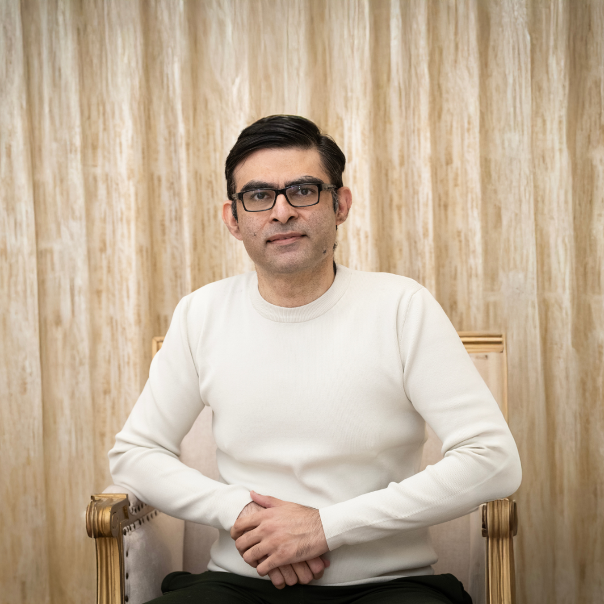
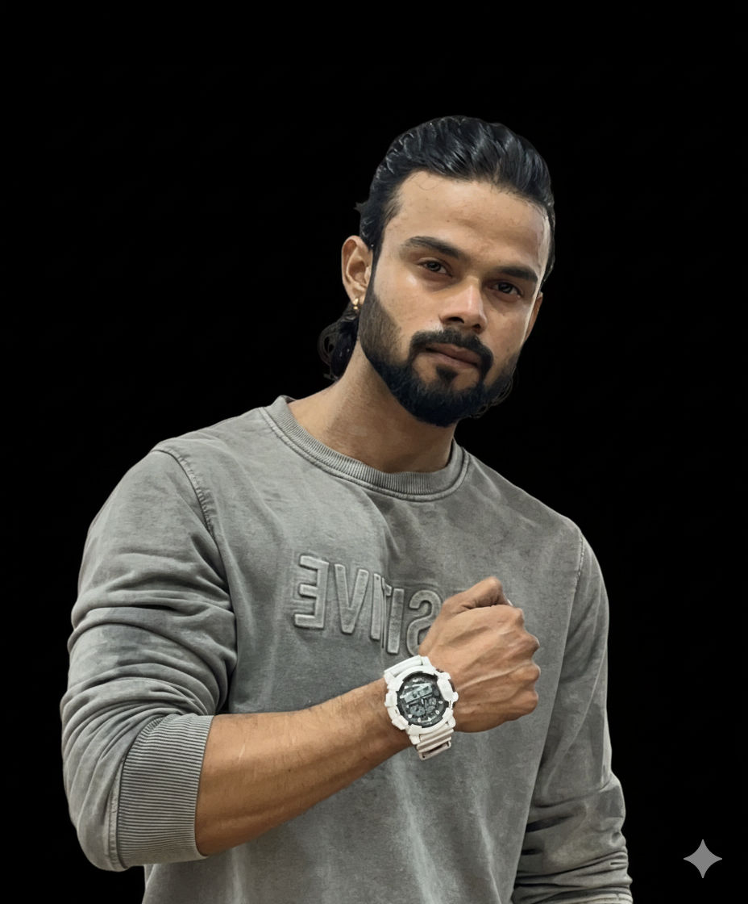
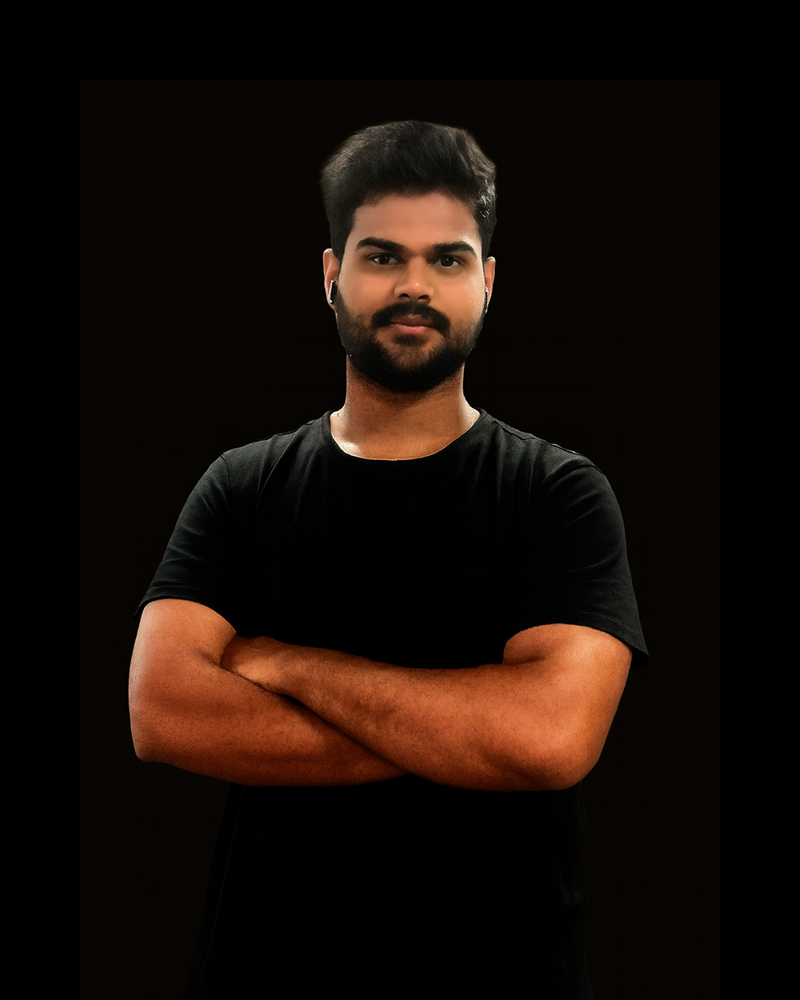
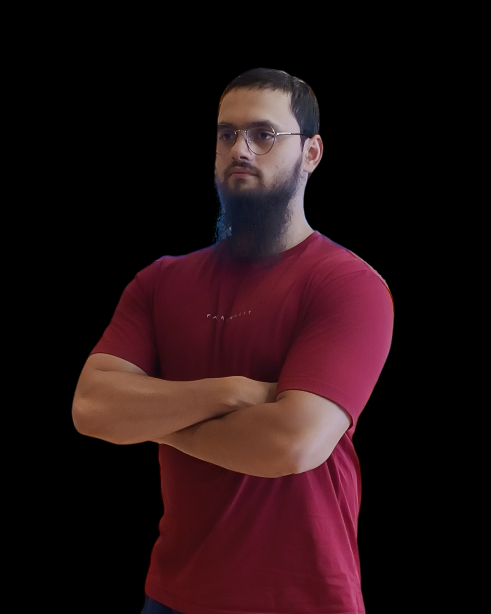
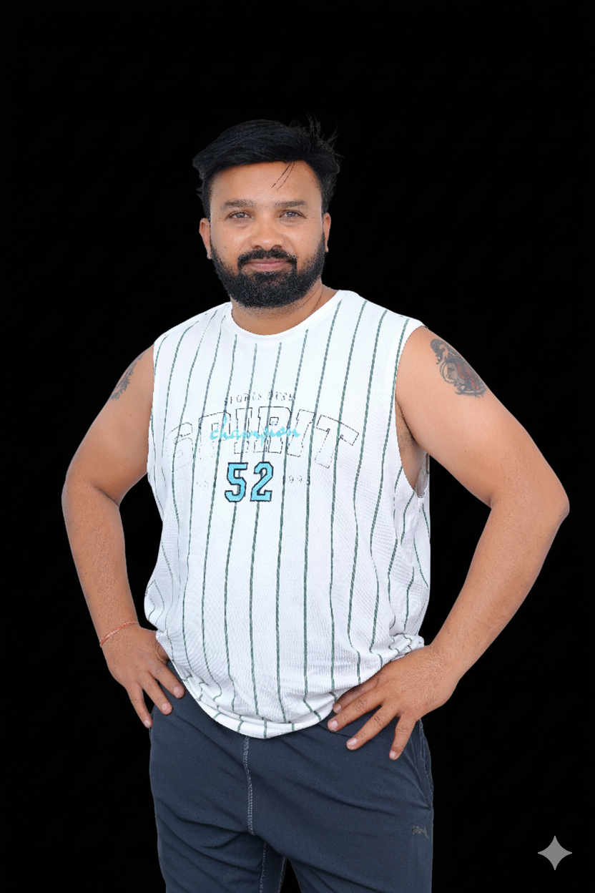
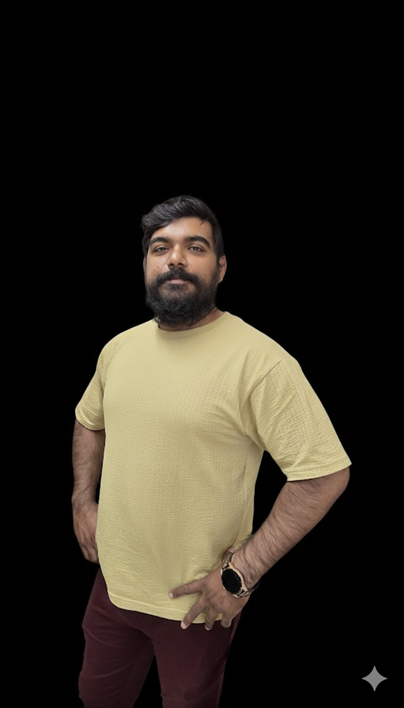
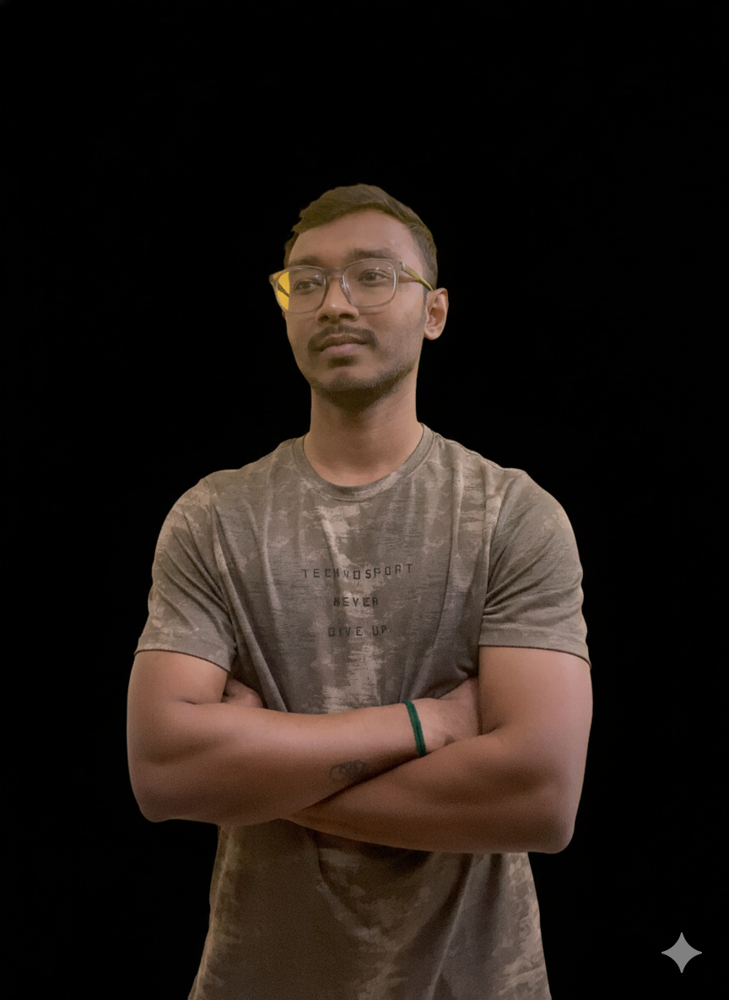
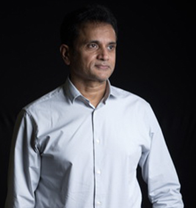

You receive a multi-coach led training model based on research-backed methodology. Say goodbye to the frustration of generic plans—instead, you get personalized support for your functional well-being, strength gains, mobility improvements, and sustainable progress. This works for every client, from kids to adults and seniors, with training customized to your unique needs.
LEADERSHIP

Fitness Entrepreneur & Business Strategist
Ashrita is a Fitness Entrepreneur by passion and choice, with multiple fitness certifications added to her belt. She has built Tonabolic - which is a strong team, offering services of Customized Personal Fitness training, rehabilitation fitness programs and corporate wellness programs. Tonabolic is a team of 20+ Certified fitness professionals and has been able to serve more than 8000 individual clients over 8 years, and more than 15 corporate clients (Leading International banks, GAP, Infosys, Vodafone AP&T, Oracle, LifeCykul, RR Kabel, Pennywise Solutions and, more.). She has led various workshops, talks and training programs for corporate employees with a focus upon making ‘Movement for Life’. She has also contributed to workshops in the social sector as a trainer and consultant to ELMS Sports Foundation and Abhinav Bindra Foundation. She has also developed fitness, health and wellness related Podcasts on Spotify. Today, Ashrita co-heads another Fitness Entrepreneurial company, ‘The Fitness Company’ which operates FSSA AP & Telangana authorized center, which imparts high quality and research-based education, in the field of fitness and sports sciences.
An alumni of GE Capital, SBI Credit Card and Vodafone and with 15 years of past experience at championing business processes and steering large business teams in the corporate world with NBFC and Telecom Giants - business development strategy, Service excellence, Client life-cycle management - are mastered skill sets for her. Additionally, she contributes to select and high-profile engagements in the areas of business development, growth and scaling strategy and, client management for Music Director and Oscar Awardee, Mr. MM Keeravaani.
Learning & Devleopment Head
Dr. Kaustubh Mulay is a trained and practicing Ophthalmic Pathologist. He holds a Bachelor's degree in Medicine from the Shivaji University. He later pursued Masters in Pathology (D.N.B. Pathology) and thereafter specialized, first in Oncopathology and later in Ophthalmic Pathology. Dr. Mulay has extensively contributed towards literature and research, by virtue of publishing is several National and International peer-reviewed journals. He has also authored chapters in Books on Ocular Oncology, including the prestigious WHO blue book on Tumors of the Eye. Some of the major awards and honours to his credit include the Dr. Gangadhar Sundar Gold medal at OPAI, Dr. SC Dutta award at AIOS, G.Subbalaxmi Gold medal for young scientist.
In his spare time, Dr. Mulay enjoys cycling, running and swimming. He is triathlete and has raced his way to the finish line at 6, 70.3 Ironman events in Asia and Europe.
In addition, he is a certified Strength & Conditioning coach, a certified Mobility expert and a certified Animal Flow instructor.
Dr. Mulay likes to blend the realms of medicine, sports, strength training and rehabilitation to provide Prehab(preventative rehabilitation) and Rehab, to his clients. Additionally, he co-heads another Fitness Entrepreneurial company, ‘The Fitness Company’ which operates ‘FSSA AP & Telangana authorized center’. FSSA imparts high quality and research-based education, in the field of fitness and sports sciences.
Dr. Mulay believes that bodily problems are often addressed after they become an issue and that is far often, too late - a reactionary approach. He believes the key to improved health care is education and awareness. This proactive-prehab-approach can mitigate the risk of injuries and pain in the first place. He is a huge proponent of movement education.

Health and Nutrition Coach
Sunny Arora is a Health and Nutrition Coach who helps people turn their training into visible results on the scale and in the mirror. He specialises in weight loss and inch loss around the midsection and hips, while protecting energy, muscle and performance for people who already train or want to start training seriously.
Sunny’s approach combines smart nutrition, meal timing and recovery with the work clients do on the gym floor. He focuses on stabilising energy for stronger workouts, supporting gut and liver health so the body can actually burn fat, and designing routines that reduce inflammation instead of adding more stress. By aligning food, sleep and stress management with the training plan, he helps clients drop inches, maintain or build lean muscle, and feel stronger and more confident rep after rep.
Certifications : Certified Health Coach (USA) and Certified Functional Nutrition Coach (Centre for Nutrition and Dietetics Studies).
Head of Operations
Preeti brings a powerful combination of financial expertise and operational management essential for scalable growth. With over two years of rigorous accounting experience supporting a Chartered Accountant firm, she ensures that all client engagements, financial reporting, and compliance frameworks are executed with accuracy and diligence.
In her capacity as Head of Operations, Preeti leverages an additional six months of dedicated management experience to oversee operational workflows, drive cross-functional efficiency, and optimize the day-to-day business functions. Her dual background ensures strategic decisions are grounded in financial reality, allowing Tonabolic to maintain stability while rapidly scaling its multi-coach led training model and market reach.







OUR UNIQUE MODEL
Tonabolic was built on the core philosophy of purpose-driven, certified instructor-led exercise sessions that prioritize movement, body awareness, and physical literacy over pre-recorded workouts.
Key Principles
This approach emphasizes inclusive programs from kids to adults and seniors, focusing on functional strength, mobility, joint health, and corrective exercises over mere heavy lifting. Services like Functional Range Conditioning, rehabilitation training, and playful movement for children promote lifelong activity through science-backed, personalized methods tailored to home or society gyms, where consistency is assured.
Addressing Indian Fitness Gaps
Tonabolic tackles barriers such as gym intimidation and crowded timings by offering flexible sessions in convenient locations, like homes and society gyms. Nutrition consulting and holistic elements like yoga and mobility sessions target everyday wellbeing, energy, and injury prevention, aligning with functional fitness for real-life benefits.
Tonabolic tackles some of the biggest gaps in the Indian fitness industry by creating a fitness ecosystem that is scientific, accessible, inclusive, and results-driven.
In short
Tonabolic solves the core issues of a fragmented, nascent fitness market by offering structured, science-driven, inclusive, multi-specialist fitness programs that adapt to different bodies, ages, and goals—making fitness sustainable for everyone.
At Tonabolic, personalized fitness means designing training that fits the person—not forcing a person into a generic program. We create science-backed, progressively structured workouts that adapt to each individual’s fitness level, physical limitations, and goals, ensuring safe, sustainable, and meaningful results.
What personalization means at Tonabolic
Tonabolic’s definition in one line:
Personalized fitness at Tonabolic is a multidimensional, science-driven, client-centric experience that evolves with your body, goals, and lifestyle.
At Tonabolic, the team of coaches is the core of our training system. Instead of relying on a single trainer to do everything, we use a multi-specialist, coordinated coaching team to deliver a truly personalized, science-backed fitness experience. This model ensures that every client benefits from multiple areas of expertise, seamless continuity, and consistent progress—no matter their age, goals, or limitations.
In essence
The team of coaches at Tonabolic ensures depth, continuity, specialization, and scientific precision—delivering a fitness experience far more comprehensive than what a single trainer can offer.
Tonabolic ensures safety and long-term progress through a science-driven, assessment-based, and coach-coordinated training system designed to meet people where they are and help them advance without risk.
In essence
Tonabolic protects clients from injury and ensures long-lasting results by combining expert coaching, scientific progression, biomechanical correctness, and personalized adaptation—creating a safe, effective, and sustainable fitness journey.
Tonabolic’s nutrition programs are guided by evidence-based nutritional science, behavior-change frameworks, and a “no quick fixes, no one-size-fits-all” philosophy. We focus on building sustainable eating habits that improve metabolic health, energy levels, body composition, and overall well-being. Our approach is rooted in long-term lifestyle change, not rigid diets or unrealistic restrictions.
The Scientific Principles Behind Tonabolic Nutrition
What You Receive
Why it Matters
True transformation comes from consistent, sustainable habits—not temporary diets or extreme restrictions. Tonabolic helps you build a nutrition lifestyle that feels effortless, enjoyable, and aligned with your long-term health.
Tonabolic’s coaching team is built on a blend of deep scientific expertise, rigorous certifications, continuous education, and a high-performance coaching culture. This combination ensures that every client receives safe, progressive, and truly personalized training.
In essence
Tonabolic’s coaching team is different because it merges science, certifications, culture, and compassion into one powerful ecosystem—delivering fitness that’s not only effective, but also sustainable, inclusive, and deeply personalized.
‘Physical literacy’ forms the foundation of Tonabolic's holistic wellness programs by developing movement competence, confidence, and motivation through age-appropriate, play-integrated activities for adults. Corporate initiatives embed this via expert-led talks and interactive sessions on varied subjects of wellness, nutrition and fitness. The program overlooks a long-term agenda to ‘Build Internal Ambassadors’ to help sustain organizations, to foster a wellness culture.
We have partnered
with companies like Infosys, Vodafone, GAP, Prokarma, ELMS Sports foundation, Cykul and more, to deliver structured group sessions.
OUR PRINCIPLES
We ensure safety through proper exercise form instruction, gradual progression, and modification based on injury history. Our comprehensive system emphasizes biomechanical correctness, warm-ups, cool-downs, and continuous coach education to reduce risk.
Our nutrition philosophy is: 'No quick fixes' or No 'one-size-fits-all' diets. We guide clients toward sustainable lifestyle changes and personalized meal guidance, focusing on evidence-based habit formation and balance over restriction for long-term health.
We provide tools and guidance for stress management, sleep, and hydration. With continuous accountability and weekly check-ins, we ensure adherence, maintain momentum, and adapt plans as you grow, achieving true transformation through consistent, healthful habits.
OUR FOUNDATION
The fitness industry is full of generic plans, extreme diets, and one-size-fits-all routines.
Tonabolic was created to bring credibility, structure, and personalization back into fitness.
We wanted a system where people don't just ‘join a program’, instead they understand, learn, grow, and actually enjoy becoming fitter.
We created a space where every step you take brings real progress, where science meets heart, and where your transformation becomes the most fulfilling experience of your life.
To empower individuals with personalized, science-based coaching and habit-building that transforms fitness into lasting strength, health, and confidence.
To become India’s most trusted personalised fitness ecosystem — empowering individuals, building expert training communities, and making sustainable transformation the new standard.
Indian Costume Designer and film stylist | Wife of Acclaimed Director Mr. SS Rajamouli
Tonabolic is a very distinctive service. Everything, from scheduling to training is smoothly organized. The trainers are extremely knowledgeable, friendly and motivating. They are always attentive to my pace and adjust the workouts according to my body and needs. Every session is planned with utmost precision and executed with great attention to safety. Highly recommend Tonabolic to anyone looking for personalized training. The best part is they help you attain your goal without making you feel that you’re being pushed too much.

Co founder and Director, Jayabheri Group
Hi, I’m a 57-year-old fitness enthusiast who joined Tonabolic about a year and a half ago. At the time, I was moderately fit but not particularly strong, and I was looking for a structured way to build real strength and improve my overall health. That’s when I was assigned to Dr Kaustubh for personal strength training, and it has been one of the best decisions I’ve made. Dr. Kaustubh is an exceptional trainer – patient, knowledgeable, and truly dedicated to his clients’ progress. He designs workouts that challenge me progressively, helping me build strength safely and effectively at my age. What sets him apart (and Tonabolic as a whole) is the holistic approach. Whenever I’ve dealt with sports injuries or nagging issues, Dr Kaustubh & his colleagues didn’t just work around them; they went the extra mile by connecting me with specialized expertise to address and overcome those problems. This level of care has kept me consistent and injury-free, allowing me to train with confidence. Tonabolic, led by the inspiring Ashrita Datta, is more than just a gym – it’s a wholesome fitness community that feels supportive, energetic, and genuinely invested in your transformation. The team of certified trainers creates an environment where everyone, regardless of age or starting point, can thrive. I’m not as strong as I’d like to be yet, but with Kaustubh’s guidance and the positive vibe of Tonabolic, I’m hopeful and excited about getting there. If you’re looking for a fitness group that combines expert training, personalized attention, and a fun, motivating atmosphere, I highly recommend Tonabolic. It’s changed my fitness journey for the better! Thank you, Ashrita, Kaustubh, and the entire Tonabolic team!
VRVS INDIA Entrepreneur
For over two years, Tonabolic has provided exemplary Yoga & Strength training services to our family. The program's tailored approach, with instructors effectively adapting exercises to our respective ages and physical capabilities, has yielded remarkable results. At 81, my father has achieved significant improvements in strength, flexibility, and mobility, enhancing his quality of life. My wife aged about 45, got sustained energy and improved toning, while I attained the peak physical conditioning needed to successfully summit Mount Kilimanjaro on 4 October 2025—a profound personal milestone at 51 years of age. Tonabolic exemplifies professionalism in fitness training. I highly recommend their services to individuals and families seeking transformative outcomes
8 years of togetherness with Tonabolic @ training!
I’ve been working out with Tonabolics for the past 8 years, starting well before Covid. When the pandemic hit and everything felt uncertain, Tonabolics was one constant I could rely on. Continuing the workouts online during Covid gave me something positive and grounding to look forward to every day and it truly made a difference during that time. What I really appreciate is the variety of trainers, each bringing their own expertise and style. The workouts never feel monotonous or boring, and there’s always something new to learn and challenge yourself with. Post-Covid, returning to physical training has been just as rewarding. My journey with Tonabolics has helped me stay not only physically fit but also mentally strong. It’s been a big part of my routine and well-being, and I’m grateful for the consistency, motivation, and support over the years.
(A proud mom of 2 teenagers)
I’ve been with Tonabolic for about six years now, and I can proudly say that I’ve grown stronger 💪 training with this incredible team. The coaches at Tonabolic have been absolutely amazing and always accommodating of our individual requirements. Watching Ashrita build and grow such a strong team despite so many hindrances is truly astounding. Wishing Team Tonabolic continued success under Ashrita’s inspiring guidance.
Director of Engineering, Microsoft Hyderabad>
Tonabolic has truly transformed my fitness journey over the past four years. The programme is thoughtfully structured to suit all fitness levels and tailored to individual needs. I commend Ashrita’s exceptional leadership in driving this initiative, supported by a team of highly certified trainers who have made a real difference. Thanks to Tonabolic, I’ve improved my strength, endurance, and stability, while also recovering from previous running and sports injuries. It’s been a game-changer for my overall well-being.
A curated collection of moments showcasing our community and commitment to fitness excellence.